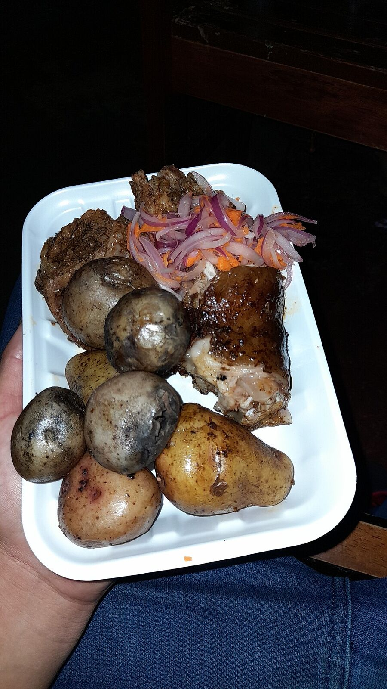
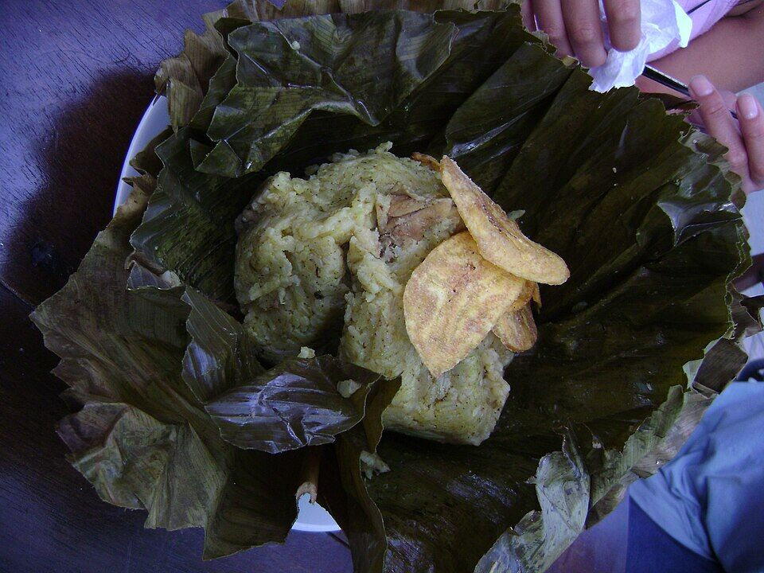
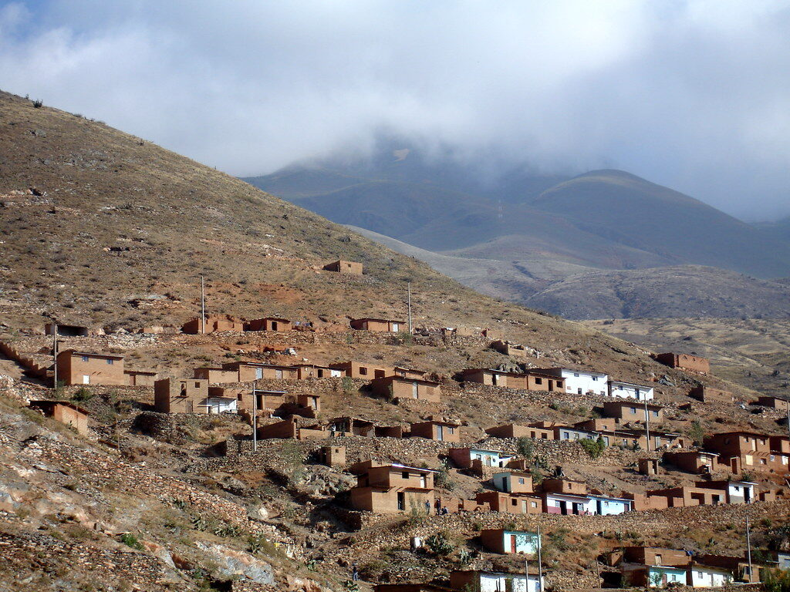
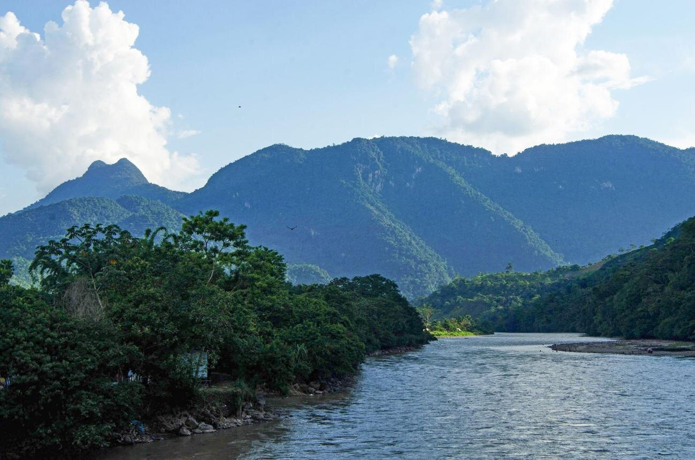
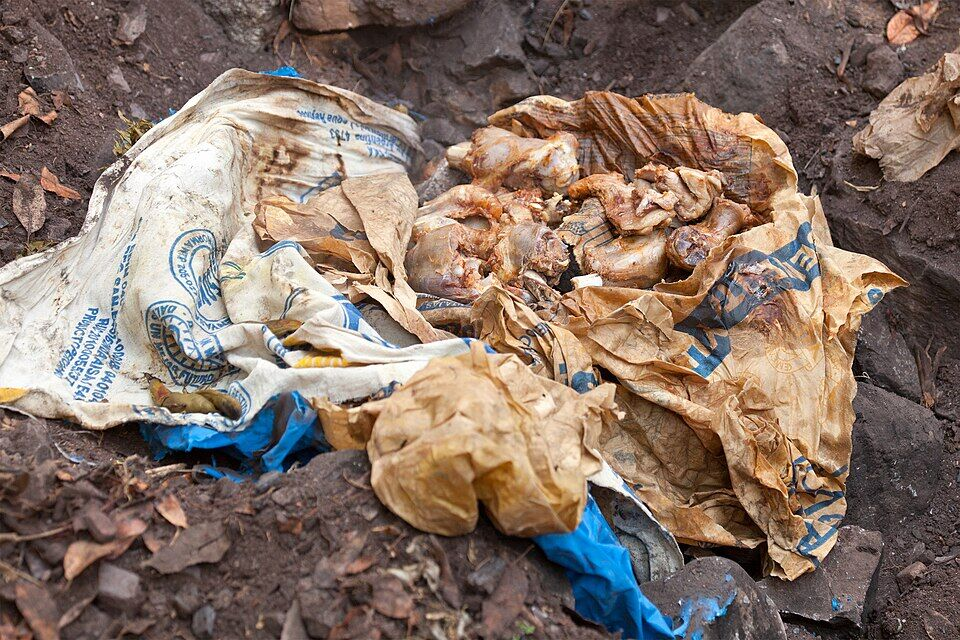

Costumbre
Muchos platos se preparan para compartir: faenas comunales, fiestas patronales, mercados de domingo y reuniones familiares.
Huánuco · Perú · Andes y Amazonía
Descubre una gastronomía llena de historia, tradición y sabores que representan nuestra tierra.
“Una tierra de sabores, una tradición que nos une”


Nosotros
Huánuco reúne en un solo territorio las punas altoandinas, los valles templados del Huallaga y la selva alta. Esa geografía explica una cocina que pasa del fogón de leña y la tierra caliente de la pachamanca a la hoja de bijao del juane.
Muchos platos se preparan para compartir: faenas comunales, fiestas patronales, mercados de domingo y reuniones familiares.
Papa, maíz, ajíes, hierbas aromáticas, yuca y plátano marcan la despensa de la región según la altitud.
Las recetas viajan de generación en generación: se aprenden mirando, probando y cocinando en familia.

Platos típicos
Ninguno de estos platos es exclusivo de Huánuco: varios comparten raíz con otras regiones andinas o amazónicas del Perú. Cada ficha indica si el plato tiene fuerte arraigo huanuqueño o si es compartido, y en qué zona de la región se encuentra.
Ingredientes
De las chacras altoandinas a las huertas de la selva alta: los productos que sostienen la cocina regional.
Cultura gastronómica
En Huánuco, la altitud cambia el plato. A medida que se desciende de las alturas hacia la selva, cambian los cultivos, las técnicas y las costumbres de mesa.
Lauricocha, Yarowilca, Dos de Mayo, Huamalíes y zonas altas de otras provincias
Tierra de papas nativas, ocas, ollucos y pastos. En lagunas y bofedales se recolecta el cushuro. El frío invita a sopas espesas y caldos de hierbas.
Valle del Huallaga: Huánuco, Ambo y alrededores
Clima templado, maíz, frutales y caña de azúcar. Mercados y picanterías mantienen vivos el locro de gallina, el chicharrón con mote y la pachamanca de fiesta.
Leoncio Prado (Tingo María), Puerto Inca y zonas bajas
El plátano y la yuca reemplazan a la papa; aparecen la hoja de bijao, la cecina ahumada y las frutas amazónicas como la cocona.


Galería
Haz clic en una foto para verla en grande · Usa las flechas del teclado o desliza en el celular

Pachamanca · comida de la tierra
En quechua, pacha es tierra y manka, olla. Piedras calientes, hierbas, carnes y tubérculos se cubren con tierra y se destapan entre todos: una cocina que se vive en comunidad.
Ver la pachamancaContáctanos
¿Conoces una preparación de tu provincia o una costumbre familiar? Escríbenos.
Página demostrativa: el formulario se valida en tu navegador, pero no envía datos a ningún servidor.